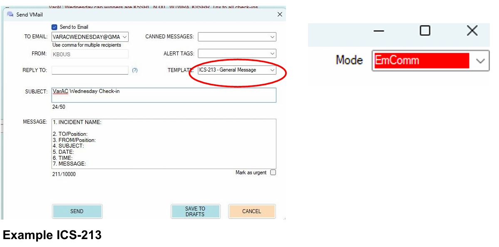

What is VarAC Wednesday?
VarAC Wednesday is a weekly amateur radio digital net where users check-in by sending a message via a station providing EMAIL gateway service.
How do I check-in to VarAC Wednesday?
Please see our instructions for a full walk thru.
What is the relationship to Winlink Wednesday?
VarAC Wednesday has no connection or relationship with the original Winlink Wednesday or any other organization who conduct Winlink testing. VarAC Wednesday uses the same message format as Winlink Wednesday. We encourage operators to participate in both weekly digital nets.
Where can I learn more about Winlink Wednesday?
You can learn more about it on the Winlink Wednesday website.
How do I compose the check-in message?
Open VarAC and click the VMAIL button. Click the "Send as email" check-box. Type "varacwednesday@gmail.com" in the "To" line. Add a comma and type an email address to receive a copy. The copy is used to verify your VMAIL was delivered from the VarAC gateway to the Internet. Next, type a reply to address. Fill out the subject line and message portion based upon what is required for the given check-in week.
The following is an example standard check-in message

Once you have reviewed your message to verify it is correct click the "SEND" button to place the message in your Outbox
What do I use in subject and message body?
Subject: VarAC Wednesday Check-InMessage body: call sign, first name, city or town, country, state, (HF or VHF, etc.) EXAMPLE 1: WA8YNQ, Mark, Cincinnati, Hamilton, OH (HF) EXAMPLE 2: ZS1OSS, Daniel, Cape Town, South Africa (VHF)
How can canned templates be used to speed up your check-in?
VarAC's canned messages can be used to automate VMAIL message composition. Use our check-in generator tool to generate a tailored canned message, containing your information, which can be used to check-in to the VarAC Wednesday net. Check out the training section for instructions on how to use the check-in generator and using the message in VarAC.
First week of month optional message
On the first Wednesday of the month a weather report is requested, but not required. The emphasis is on brevity and communicating the information rather than applying a strict format. Please include your weather report on the line below your check-in. EXAMPLE 1: At 0934 local time, it is clear, sunny and 51°F. Winds are out of the NE at 10 mph. To: varacwednesday@gmail.com Subject: VarAC Wednesday Check-In Message body: KB0US, Twin Falls, ID, (HF) 0934L, Clear, Sunny, 10mph NE, 51F EXAMPLE 2: At 1317 UTC, it is overcast with light rain, 10°C, wind from the SW at 5 km/h To: varacwednesday@gmail.com Subject: VarAC Wednesday Check-In Message body: VE3XYZ, John, Toronto, Canada 1317Z, overcast, light rain, 5 km/h SW,10C
Third week of month optional message
On the third Wednesday of the month an ICS-213 report is requested, but not required.
Incident Command System (ICS) forms were developed by FEMA (the U.S. Federal Emergency Management Agency) and are designed to facilitate structured communication during disaster response, exercises, or other coordinated efforts. The most commonly used ICS form in Winlink is the ICS-213, a general message form for transmitting formal messages between agencies or operators. In Winklink Express, these are HTML forms which are filled out in a browser that is then transferred to a Winlink Express email as text for sending. We don't have the HTML form, BUT we do have the text form as a TEMPLATE in the SEND VMAIL dialog box . but only in EMCOMM mode. For those wishing to practice sending ICS forms using VarAC, VarAC Wednesday gives you an opportunity to do so.
Below is an example of the text on filling on an ICS-213 to send as a VMAIL in VarAC
- 1. INCIDENT NAME: VarAC Wednesday
- 2. TO/Position: KB0US, Net Control
- 3. FROM/Position: WA8YNQ, Participant
- 4. SUBJECT: VarAC Wednesday Check-in
- 5. DATE: 2025-07-16
- 6. TIME: 08:00L
- 7. MESSAGE: WA8YNQ, Mark, Cincinnati, Ohio (HF)
- 8. APPROVED BY
- > Name / Position: Mark Rosneck, Net Participant
- 9. REPLY:
- 10. REPLIED BY
- > Name/Position:
- > Date/Time:
There are actually a number of ways to produce the ICS-213 message including
- Fill out the form in EmComm mode, change the subject to "VarAC Wednesday Check-in", press send to put the message in the Outbox, and connect to a beacon in EmComm mode to experience the entire emergency message system.
- Fill out the form in EmComm mode, press send to put the message in the Outbox, change the mode to Advanced, and connect to a beacon station. This avoids any concerns of sending traffic in EmComm mode which, while it is a drill, is certainly not emergency traffic.i
- If you are also participating in Winlink Wednesday, you could fill in the form on Winlink Express and copy it into a regular VarAC email.
- You could create a prefilled form as a canned message (now available in V11.2.0 in the VMAIL dialog box) and then manually change the time and date. An ICS-213 canned message generator comming soon!
Sending your message through an Email Gateway
You will need to send your check-in through a VarAC station that provides email gateway service.
- Identify a clear slot to pass your email to a beacon. Using the Slot Sniffer in the CALL CQ menu is probably easiest although some will just look at their panadapter.
- Return to calling frequency.
- Connect to a beacon displaying the Email Gateway icon.
- Send a QSY request to the beacon for the slot you identified as open.
- You and the beacon both automatically move to the open slot.
- The email is automatically transferred.
- Disconnect when the email is transferred.
The entire process should look like this:

VarAC will likely display a number of information pop-ups that will clear themselves
automatically. You do not need to manually clear these. In fact, if both you and the beacon are set up
correctly, you should not have to touch the keyboard after sending the QSY request; everything should
continue automatically up until you need to click DISCONNECT or send a
When do I send my check-in message?
Send your email every Wednesday between 0000 and 2400 your local time.
Additional information
- Check-ins who do not use a VarAC EMAIL GATEWAY will not be counted.
- You must be at on at least V11.0.7
- YOU DO NOT NEED AN EMAIL GATEWAY ON YOUR INSTALLATION OF VarAC TO CHECK IN! You will be using the EMAIL GATEWAY of the beacon displaying the email gateway icon that you connect with.
- In V11.2.0 and above, canned messages are available in the VMAIL dialog box making participation in VarAC Wednesday even easier! You must be on V11.0.7 or greater.
- YOU DO NOT NEED AN EMAIL GATEWAY ON YOUR INSTALLATION OF VarAC TO CHECK IN! You will be using the EMAIL GATEWAY of the beacon displaying the icon that you connect with.
- In V11.2.0 and above, canned messages are available in the VMAIL dialog box making participation in VarAC Wednesday even easier!